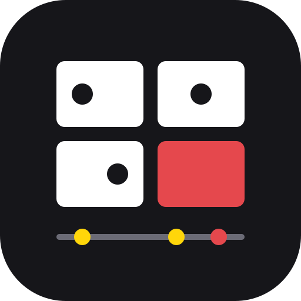

有新版本
立即更新
稍後

影格拼圖
設定
把錄影變成一張「漫畫格子」大圖，每格標上編號和秒數，貼給 AI 就能看懂動作。所有處理都在你的瀏覽器裡，影片不會上傳。
開始錄影
上傳影片
也可以把影片檔直接拖進這個視窗。
想請 AI 做什麼？（選填，會放進說明文字）
處理中…
複製拼圖
複製說明
下載拼圖 ▾
原始圖檔
PNG，畫質完全不變
壓縮圖檔
JPG，檔案比較小
下載所有圖片
下載整包 zip
下載原始錄影
重新產生
給 AI 的說明文字（可以直接修改）
放開以載入影片
設定
完成
挑畫面的方式
自動（抓變化）
固定間隔
格數
每排幾格
每格畫質（寬度）
320 px
480 px
640 px
錄影時顯示滑鼠
外觀
跟隨系統
淺色
深色
自動檢查更新
目前版本
檢查更新
更新歷史